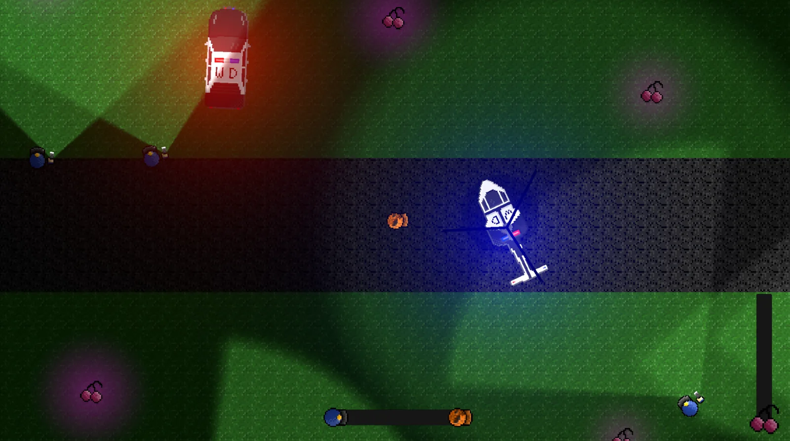
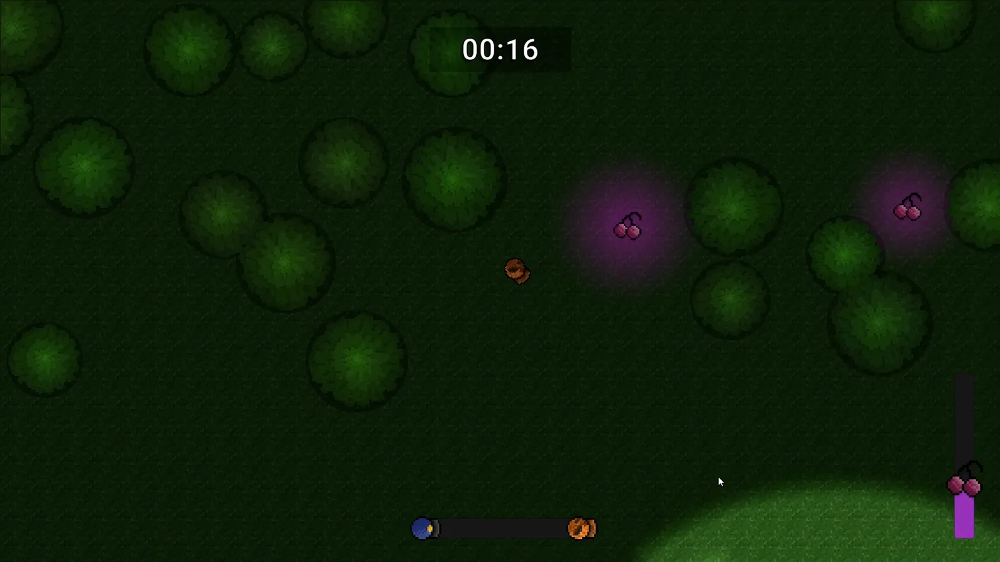
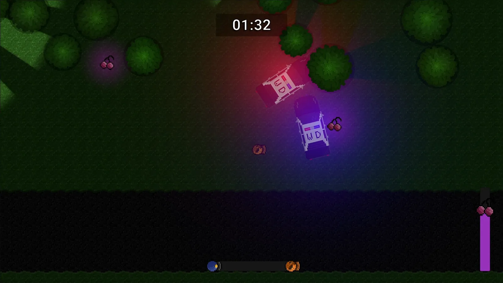
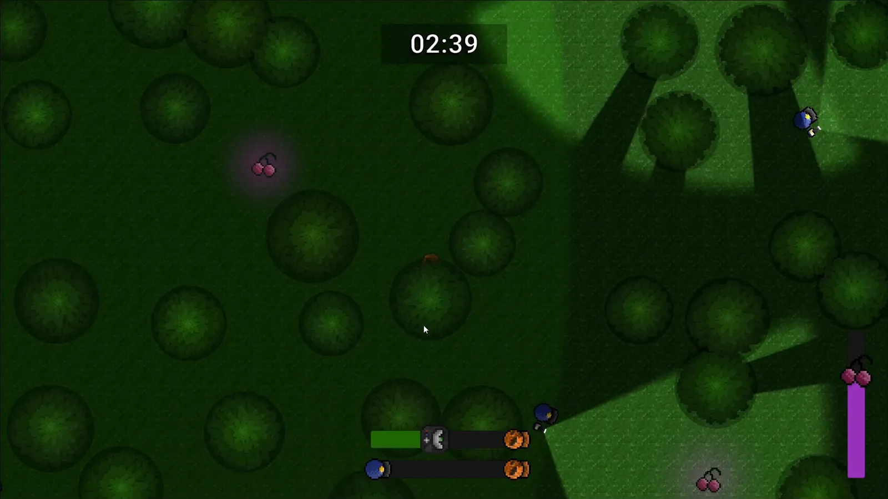
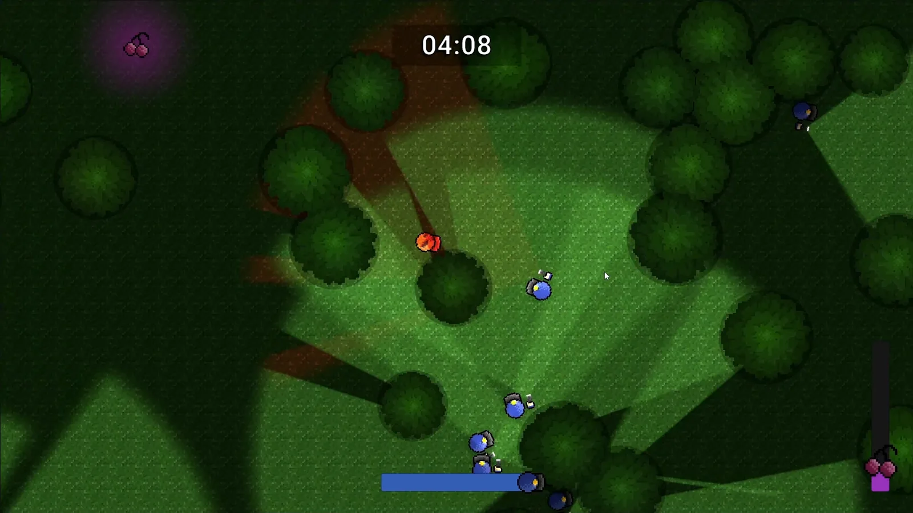
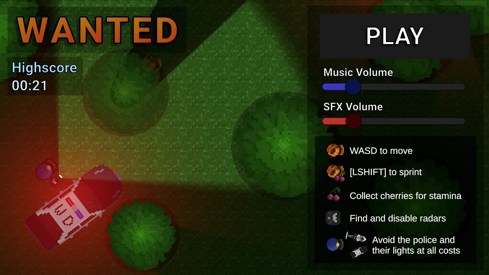

Case study · Solo project · Game jam
Wanted
A top-down stealth survival game built in a week for the Tyne to Game jam. You cannot fight, and you cannot win. There is only a clock counting how long you stay uncaught while the police presence around you grows, car by car, until the forest is full of torchlight.

- RoleSolo developer
- EngineUnity 6 · URP 2D
- Built inOne week
- Nav2D NavMesh · NavMeshPlus
Overview
The only score is how long you last
Wanted has no objective and no win state. The whole game is a timer, and your best time is the only thing it remembers between runs. That single decision shapes everything underneath it: if the player can never win, then the systems only ever have one job, which is to make the pressure rise convincingly.
So there is no difficulty setting and no wave counter. Instead the police force is a thing that physically arrives and accumulates. Cars drive in from off-screen, park, and unload officers who stay for the rest of the run. Escalation is not a number going up somewhere; it is the map slowly filling with people looking for you.

Escalation
A force that arrives in waves
A central manager owns the whole escalation curve. A patrol car arrives roughly every 30 seconds, up to six of them. Each car runs its own little three-state machine, approaching a random point on the road, pulling over, then parking, and only once parked does it unload four officers. Six cars, four officers each, so a run that goes the distance ends with twenty-four officers on the map and none of them ever leaving.
Helicopters work differently on purpose. They spawn from 30 seconds onward, fly a straight line clean through a random point on the map with a spotlight drifting under them, and despawn on the far side. They are a pass, not a presence, which gives the escalation a rhythm instead of a flat ramp.
One detail I like: when a car finishes parking it triggers a NavMesh rebake. The car is a solid obstacle that did not exist a moment ago, so without the rebake the officers it just unloaded would happily path straight through the vehicle they arrived in.

Detection
One meter, four times slower under cover
Every officer runs a real line-of-sight check rather than a cone test: a trigger volume catches you, then a raycast from the officer to your centre has to reach you without hitting anything on the vision obstructing layers. Only if that ray lands does detection start climbing.
The rate is where the stealth actually lives. In the open the meter fills at 1.0 per second. Standing under foliage it fills at 0.25 per second, so cover does not make you invisible, it buys you four times as long to be wrong. The player sprite drops to 40% opacity while under a tree, so the state you are in is always legible without a UI element for it.
RaycastHit2D hit = Physics2D.Raycast(rayOrigin, directionToPlayer, distanceToPlayerForRay, visionObstructingLayers);
if (hit.collider == null)
{
Debug.DrawRay(rayOrigin, directionToPlayer * distanceToPlayerForRay, Color.green);
playerController pc = other.GetComponent<playerController>();
if (pc != null)
{
if (pc.foliageUnder.Count == 0)
{
lawEnforcementManager.ChangeDetectionPercentage(1 * Time.deltaTime);
}
else
{
lawEnforcementManager.ChangeDetectionPercentage(0.25f * Time.deltaTime);
}
}
if (lawEnforcementManager.detectionPercentage >= 1f)
{
canSeePlayerCurrentFrame = true;
}
}
else
{
Debug.DrawRay(rayOrigin, directionToPlayer * hit.distance, Color.red);
canSeePlayerCurrentFrame = false;
}Decay is deliberately unkind. The meter only starts falling after three full seconds without any fresh detection, and then at just 0.1 per second. Breaking line of sight is not enough; you have to break it and then commit to staying hidden long enough for it to count.
When the meter does hit 1.0, the manager sorts every officer on the map by distance to you and redirects the closest 10%. That proportion matters more than it looks: early on with four officers it sends one, and late in a run with twenty-four it sends three. The response scales with the force instead of dogpiling the entire map onto one sighting.

Officer AI
Patrol, chase, and search where you were
Each officer runs a three-state machine. Patrolling walks between random nodes scattered across the map. Chasing tracks your live position and keeps writing it down. Searching is what happens when you break the ray: the officer walks to your last known position, and only when they arrive and find nothing do they pick a fresh search node and eventually drift back to patrol.
That last known position needed a guard I did not anticipate. The map
is procedural, so the exact point where an officer lost sight of you
can easily be inside a tree and off the NavMesh. Feeding it straight
to the agent produces an officer who stops dead and never resumes, so
the destination is passed through NavMesh.SamplePosition
first, falling back to patrol if nothing valid is within a metre.
Officers also get a random speed multiplier between 0.9 and 1.1 at spawn. Four officers unload from the same car at the same instant, and without that jitter they move as a single rigid block forever. A 10% spread is enough to make a squad spread out into something that reads as individuals.
Game feel
The flashlight is the state machine
There is no alert icon anywhere in Wanted. The officer's torch is the entire readout, and it maps one to one onto the state they are in. Patrolling and searching gives you a normal white beam, sweeping side to side on a sine oscillation, damped to 60% while they are walking so it does not look unhinged. The instant an officer transitions to chasing, that beam turns red and doubles in intensity.
Torches also switch off entirely beyond 30 units unless the officer is actively searching. That started as a way to stop distant lights washing out the screen, and ended up doing something better: a torch appearing in the distance genuinely means something is happening over there.

Map & performance
250 trees, and the shadows they cannot all cast
The forest is generated per run. 250 trees and 30 bushes are placed by rejection sampling, each candidate rejected if it lands within 2.5 units of anything already placed, and constrained to two bands either side of the central road so the road stays clear. Placement runs one attempt per frame rather than in a single blocking loop, and rejected positions are simply retried next frame. Once the 250th tree lands, the 2D NavMesh bakes over the finished layout.
The performance problem this creates is shadows. Every tree is a 2D shadow caster, and every torch, headlight and spotlight is a dynamic light, so the cost is trees multiplied by lights and it climbs fast once two dozen officers are on the map. The fix is a distance cull: each tree disables its own shadow caster beyond 15 units of the player and re-enables it on the way back in. Shadows only exist where the camera can actually see them resolve.
Cover is also a resource rather than scenery. Bushes grow berries on a 6 to 18 second timer, eating them restores stamina, and the bush goes bare until it regrows. Sprinting is the only thing that outruns an officer and it drains a stamina bar that only refills from berries and scattered cherries, so hiding spots and fuel are the same object.

Pressure
The radar makes hiding stop working
Hiding under a tree is strong enough that a long run could stall out entirely, so officers deploy radars. A radar can only appear after the first minute, only one exists at a time, and it sits there pinging on a visible countdown. If that countdown completes it sets your detection straight to maximum regardless of where you are hiding.
You can walk up and disable it, which is the point. The radar is the system that forces you out of good cover and across open ground, and its scan time shortens as the run goes on, floored at 20 seconds, so late in a run the choice between breaking cover and eating a guaranteed spot gets very short indeed.
Under the hood
By the numbers
- Built in one week for the Tyne to Game jam, solo, in Unity 6 on URP 2D with dynamic lights and shadows.
- 250 trees and 30 bushes per run, rejection sampled at a 2.5 unit minimum spacing, one placement attempt per frame.
- Six patrol cars, twenty-four officers at full strength, plus helicopter passes from 30 seconds and radars from 60.
- Detection fills 4x slower under cover, 1.0/s in the open against 0.25/s in foliage, with a 3 second grace before it decays at 0.1/s.
- The closest 10% of officers are redirected on a confirmed sighting, so the response scales with the size of the force.
- Shadow casters cull beyond 15 units, which is what keeps 250 trees against two dozen dynamic lights affordable.
- Open source under the MIT licence, on GitHub.